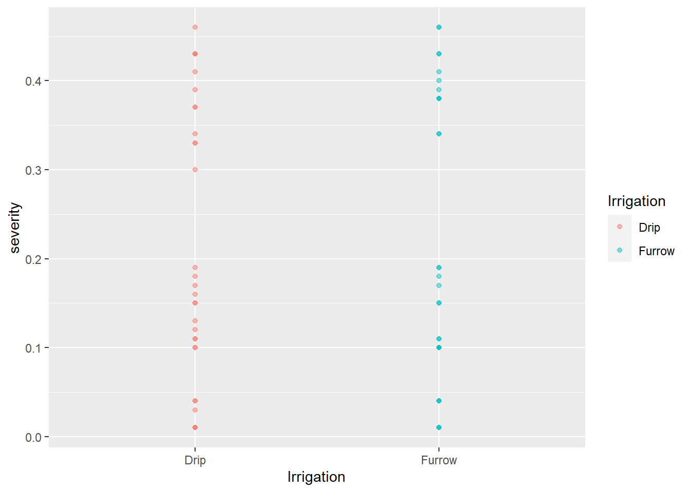
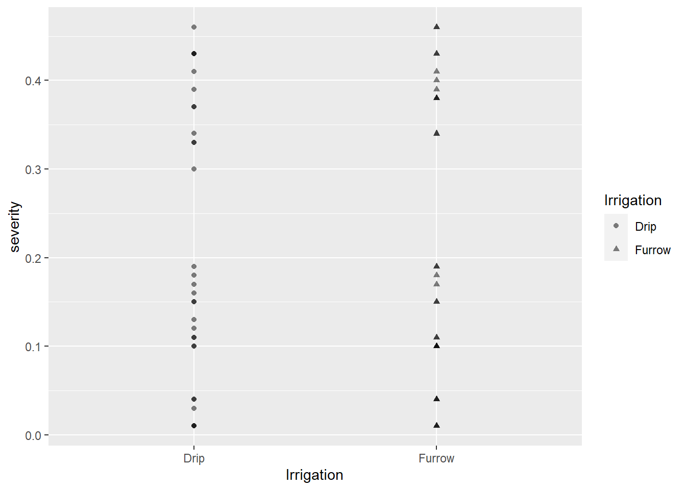
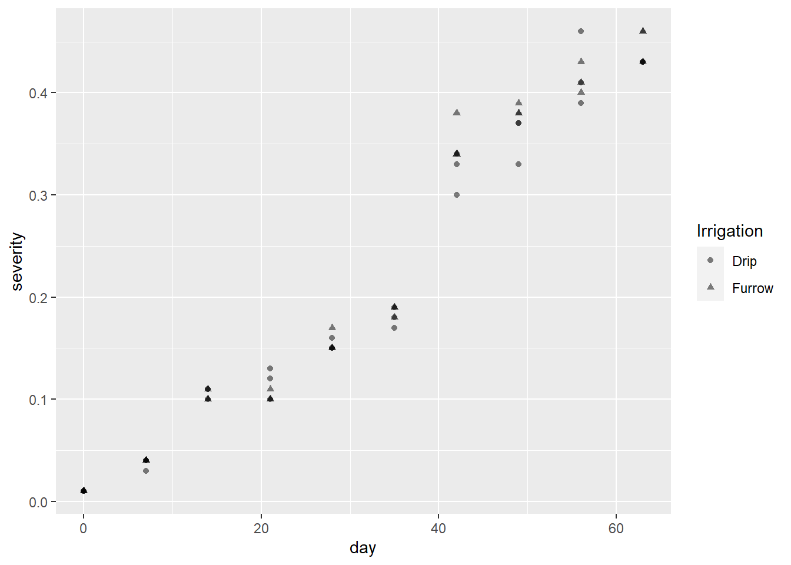
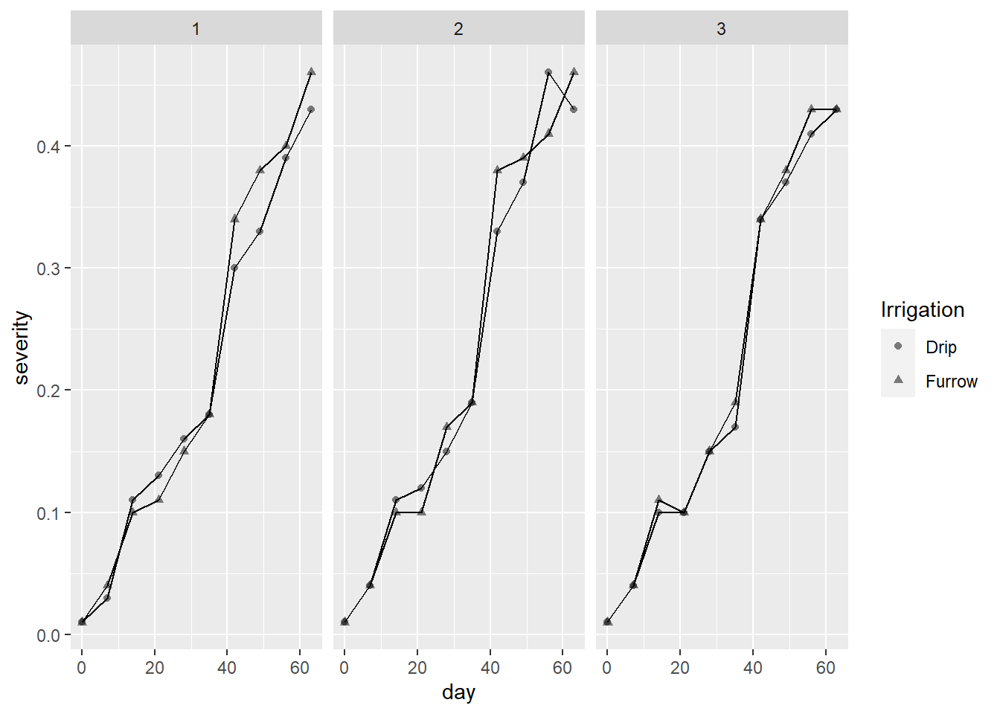
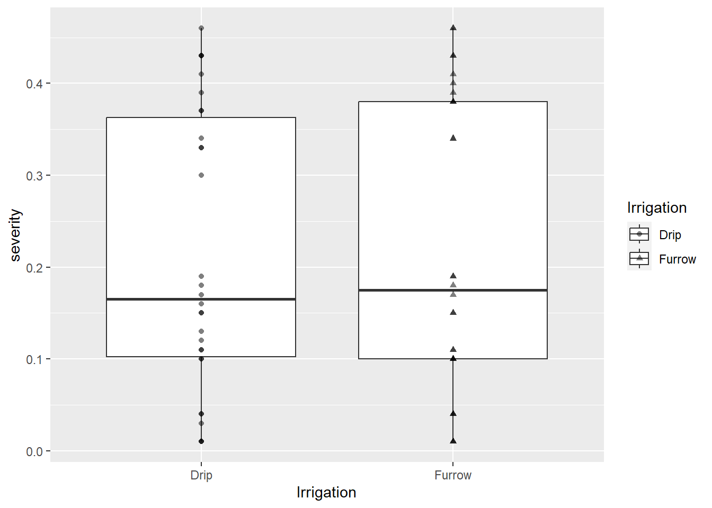
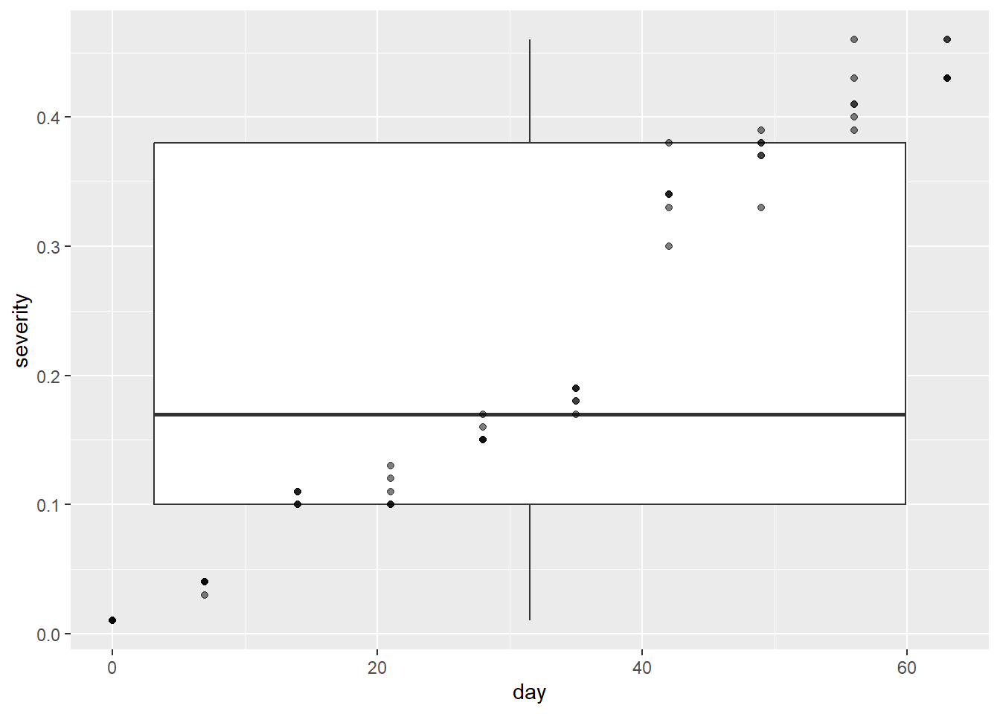
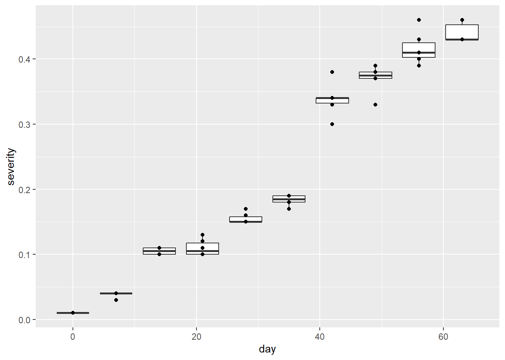
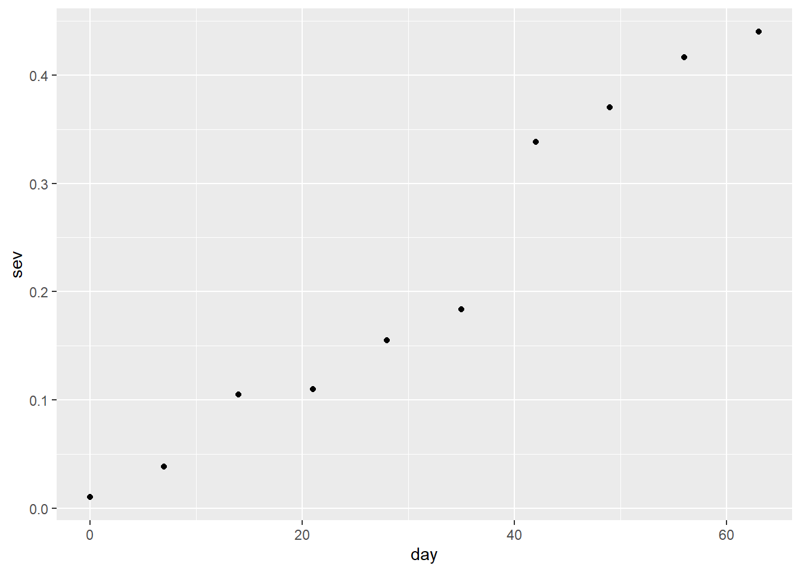

library(tidyverse)
mg <- read_csv("dados-diversos.csv")Aula4_visualização
Gráficos em ggplot
Importação de dados
O pacote ggplot2 pode ser carregado individualmente, ou pode ser carregado pelo tidyverse.Após carregar o pacote, importa-se um banco de dados para trabalho. Para o formato csv, é necessário carregar o pacote tidyverse. As variáveis podem ser categóricas ou numéricas. As variáveis categóricas são entendidas no R como caracteres.
GGPLOT - Definindo camadas
A primeira função para criar um ggplot é a função ggplot, que define o conjunto de dados e elementos de estética dos gráficos.O primeiro elemento da função é o conjunto de dados a ser utilizado. A programação de gráficos em ggplot2 é feito na forma de camadas, que são adiconadas a medida que se confecciona o gráfico, por isso que se usa o sinal de +, porque significa a adição de mais uma camada. O primeiro argumento da função é o data frame onde nossos dados foram armazenados (Ex. mg). Usa-se o pipe (|>) para enfatizar uma sequência de comandos ou ações no chunk e para evitar adiconar o nome do dataframe dentro da função ggplot. O pipe deve ter sempre um espaço antes dele e, geralmente, deve ser seguido por uma nova linha. Após a primeira etapa, cada linha deve ter dois espaços, o que torna mais fácil adicionar outras etapas ou reorganizar as já existentes.
library(ggplot2)A função ggplot() define o plano com os eixos x e y. Uma das primeiras funções em ggplot é a aes, usada para descrever como as variáveis são mapeadas (eixos x e y). Para adionar cor usa-se a função color = nopme da cor. Ao incluir esta função dentro da função aes, dizemos ao ggplot que os pontos devem ser mapeados esteticamente utilizando cores para cada variavel (ex.irrigação). A função geo_point define que a forma geométrica a ser utilizada é baseada em pontos, gerando um gráfico de dispersão. A função alpha trabalha com a tansparência.
mg |>
ggplot(aes(Irrigation, severity, color = Irrigation))+
geom_point(alpha = 0.5)
A função shape é utilizada para adicionar diferentes formas ou tipos de marcadores para diferenciar as variáveis (ex. quadrado e triângulo).
mg |>
ggplot(aes(Irrigation, severity, shape = Irrigation))+
geom_point(alpha = 0.5)
Agora, mudamos a váriavel irrigation por day. Para isso, basta subtituir a variável dentro da função aes. A função filtro, como o próprio nome remete, filtra determinadas linhas e a função geom_line transforma o gráfico em um gráfico de linhas:
# mudando para a variável day
mg |>
ggplot(aes(day, severity, shape = Irrigation))+
geom_point(alpha = 0.5)
# Deixando apenas 1 repetição - função filter e alterando para gráfico de linhas
mg |>
filter(rep == 1) |>
ggplot(aes(day, severity, shape = Irrigation))+
geom_point(alpha = 0.5)+geom_line()
A função facet_wrap adiciona facetas.Ou seja, com essa função informamos que um grafico deve ser criado para cada ambiente, um grafico digferente para cada variável.
# Dividindo o número de repetições - função facet_wrap
mg |>
ggplot(aes(day, severity, shape = Irrigation))+
geom_point(alpha = 0.5)+
geom_line()+
facet_wrap(~rep)
Outras funções:
#Função select - seleciona colunas
mg |>
select(Irrigation, severity) |>
ggplot(aes(Irrigation, severity, shape = Irrigation))+geom_point(alpha = 0.5)
BoxPlot
Usado para estatistica descritiva. Para adicionar um boxplot com o ggplot, basta fazer a adição da função geom_boxplot.
mg |>
select(Irrigation, severity) |>
ggplot(aes(Irrigation, severity, shape = Irrigation))+geom_boxplot()+
geom_point(alpha = 0.5)
# Mudando a variável irrigação por day
mg |>
select(day, severity) |>
ggplot(aes(day, severity))+
geom_boxplot()+
geom_point(alpha = 0.5)
# Separando por grupo - função group
mg |>
select(day, severity) |>
ggplot(aes(day, severity, group = day))+
geom_boxplot()+
geom_point()
# Retirando group e geom_boxplot
mg |>
select(day, severity) |>
ggplot(aes(day, severity))+
geom_point()
# Agrupando por repetição: As primeiras 3 linhas separam a severidade por dia.
mg |>
select(day, rep, severity) |>
group_by(day) |>
summarise(sev = mean(severity)) |>
ggplot(aes(day, sev))+
geom_point()
Criando um novo conjunto, fazendo a media e adicionando titulo no gráfico:
mg2 <- mg |>
select(day, rep, severity) |>
group_by(day) |>
summarise(sev = mean(severity)) |>
ggplot(aes(day, sev))+
geom_point()